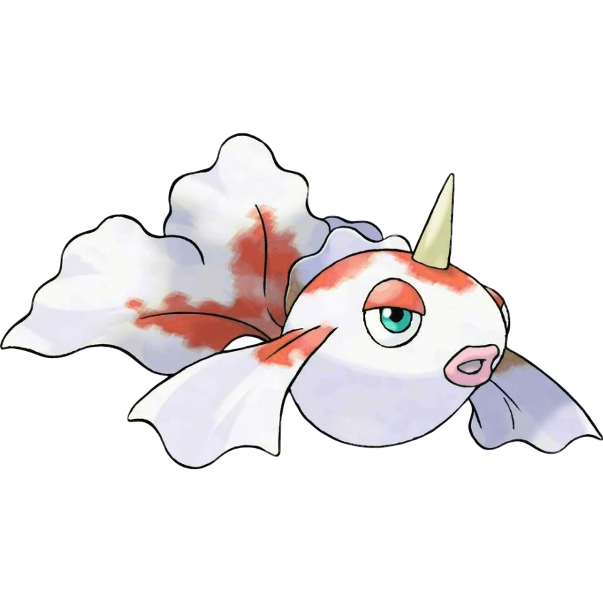

KANTO POKÉDEX
← 포켓몬 목록으로
#118

콘치
물
금붕어 포켓몬
특성
수의베일
쓱쓱
피뢰침 (숨겨진 특성)
울음소리
포획률 & 성비
포획률
225 / 255
성비
♂ 50%
50% ♀
생태
가을이 되면 암컷에게 프로포즈하기 위해 강바닥에서 춤추는 수컷을 볼 수 있다. 몸 색깔이 가장 아름다운 계절이다. 왕콘치로 진화한다.
← #117 시드라
#119 왕콘치 →